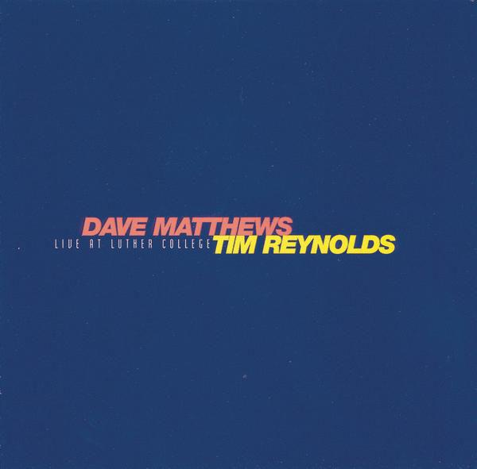

6 min read

Like Robbie Robertson and The Band, Dave Matthews seeks here to craft a retelling of the story of Jesus that might cause us to look at this old tale from a fresh perspective, and consider anew its core meaning.
This retelling is a bit more ambitious than Robertson's. Like Jackson Browne, Matthews is not an avowed Christian, and yet he finds deep meaning in this story.
There are several recordings of this song by Dave and his companions, including several live versions. One I particularly like is the one by Dave and his friend Tim Reynolds, performed live at Luther College.
The song opens with a descending guitar figure that is repeated throughout the song. It's a very simple but distinctive riff, pretty but serious, and ending with a pause that seems to hang in the air, as if waiting for an answer to a question.
Matthews' vocals then come in over this guitar figure, and then continue to play with it over the course of the song in interesting, often surprising, ways.
Note that the length and rhyming pattern of the verses vary as the song progresses: this seems to be an intentional device to keep the listener paying attention, in line with Matthews' overall challenge to the listener to not take this story for granted, to not assume we already know everything about it.
Matthews starts with lyrics that serve to humanize Jesus and his parents, to bring them up-to-date, and perhaps to sneak up on his audience a bit: nothing in the first four lines betray any traditional words or images associated with Christ.
But then Matthews shows his hand with a reference to the three Wise Men, and concludes with references to being surrounded by love.
She was his girl, he was her boyfriend.
Soon to be his wife, make him her husband.
A surprise on the way, any day, any day.
One healthy little giggling, dribbling baby boy.
The Wise Men came, three made their way
To shower him with love, while he lay in the hay.
Shower him with love, love, love,
Love love, love,
Love, love was all around.
Matthews then goes on to quickly summarize the years between Christ's birth and his crucifixion, again using modern language that helps to both humanize and update the image of Jesus for us, and again concluding with a reference to love, now in the heart of Christ, and surrounding him.
Not very much of his childhood was known.
Kept his mother Mary worried, always out on his own.
He met another Mary who for a reasonable fee
Less than reputable was known to be.
His heart was full of love, love, love,
Love, love, love,
Love, love was all around.
Matthews next jumps to the scene of Jesus talking to his father from the cross, expressing doubts about what he has accomplished while on earth. Again, the language is intentionally modern, and avoids any overt religious references. But now, in line with the doubts expressed, this verse ends with blood all around, not love.
When Jesus Christ was nailed to his tree,
Said "Oh, Daddy-o, I can see how it all soon will be.
I came to shed a little light on this darkening scene.
Instead I fear I've spilled the blood of my children all around."
The blood of my children all around
The blood of my children's all around.
Matthews then drops from a third-person omniscient voice to a personal, first-person perspective. He confesses that this story is what he's been told, implying that it is not necessarily true, and so stepping back from speaking with any semblance of religious authority. The singer now addresses his listeners directly, and explicitly states that the people Christ knew did not seem to be the stalwart pillars of society, but rather people like us.
So I'm told, so the story goes,
The people he knew were
Less than golden-hearted:
Gamblers and robbers,
Drinkers and jokers,
All soul searchers,
Like you and me,
Like you and me.
And now, perhaps as another device to keep the listener from becoming complacent, the singer returns to the story of Christ, but at a point preceding the crucifixion. He talks about those who take Jesus into custody but, in line with Christ's admonishment to “forgive them, for they know not what they do,” the singer does not judge the authorities harshly, but says only that they were less informed, and were also soul searchers, searching for love.
Rumors insisted he soon would be,
For his deviations, taken into custody
By the authorities, less informed than he.
Drinkers and jokers, all soul searchers,
Searching for love, love, love,
Love, love, love,
Love, love was all around.
Matthews now continues the story, reaching the point at which Christ asks his followers to eat bread as a remembrance of his body, but Matthews now offers up the wine as a symbol of the blood of our children all around, as a remembrance of the pain and suffering we inflict on innocents.
Preparations were made
For his celebration day.
He said, "Eat this bread, think of it as me.
Drink this wine and dream it will be
The blood of our children all around,
The blood of our children all around."
The blood of our children's all around.
And now the singer asks the final question, seeking the answer for which he has been searching. And at this point, the singer could be Jesus, or he could be Matthews. Certainly, though, we feel that this is Dave Matthews asking in his own voice.
Father up above,
Why in all this hatred do you fill me up with love, love, love?
Love, love, love, Love, love, love,
Love, love was all around.Father up above,
Why in all this anger do you fill me up with love?
Fill me love, love, yeah,
Love, love, love,
Love, love, and the blood of our children all around.
And so, like the guitar figure that has run throughout the whole song, we end on a question: When there is so much hate and suffering in the world, why do we find ourselves filled with love? And filled with this love, but facing the blood of our children all around, how are we called upon to act?
This is a beautiful song, and a very unusual one, in its lack of certainty, its lack of an upbeat, conclusive musical signature, and its unadorned, unapologetic repetition of the word “love.”
This is a song that calls out to us, not to enjoy the holidays, but to question the deeper meaning of the traditions we are performing; it's a singer and a song asking us, not just to feel love, but to ask ourselves what we will do with it.
Like the Christmas songs of Ray Davies and Jackson Browne, this is a call to open our hearts, and then to take those feelings out into the world with us.
Next: “Auld Lang Syne”
Or see the complete list of Christmas Favorites from The Practical Utopian.